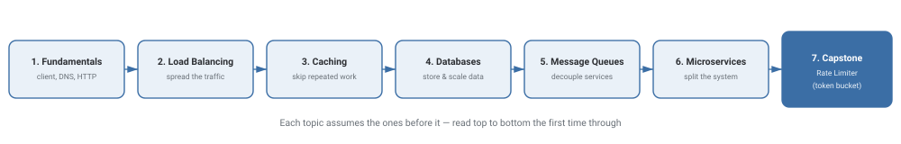

High-Level Design (HLD)
HLD is the "zoomed-out" half of system design: how a request gets from a user to a working system and back, and how that system stays fast and available as traffic grows. This track has 7 topics, each building on the last, ending in a worked capstone.
What You'll Learn
By the end of this track you'll be able to answer the question every system design interview starts with: "walk me through what happens when a user hits this system," and back it up with real trade-offs at each step — not just name-dropping "load balancer" or "cache," but knowing why and when each one earns its complexity.

The 7 Topics
-
1
Fundamentals
The client-server model, DNS, HTTP, and latency vs. throughput — the vocabulary every other HLD topic assumes you already have.
-
2
Load Balancing
Once one server isn't enough, how do you spread traffic across many without any single one becoming the new bottleneck?
-
3
Caching
The cheapest way to make a system faster: don't redo work you already did. Where caches live, and what happens when they're wrong.
-
4
Databases
SQL vs. NoSQL, replication, and sharding — how the system's actual data survives growth and failure.
-
5
Message Queues
Decoupling services in time — so a slow or failed downstream service doesn't take the whole request down with it.
-
6
Microservices
Splitting one system into many services on purpose — and the very real coordination cost that comes with it.
-
★
Capstone: Rate Limiter
A worked, timed example that pulls the previous six topics together into one interview-shaped design problem.